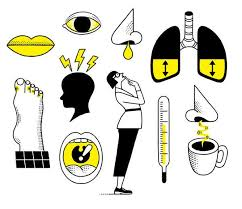
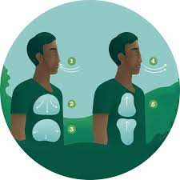
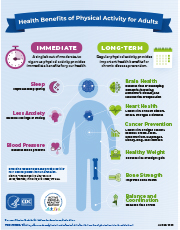

COLLECTION OF HEALTH ARTICLES
-

Symptoms of the common cold and influenza
The common cold and influenza (flu) are the most common syndromes of infection in human beings. These diseases are diagnosed on symptomatology, and treatments are mainly symptomatic, yet our understanding of the mechanisms that generate the familiar symptoms is poor compared with the amount of knowledge available on the molecular biology of the viruses involved.New knowledge of the effects of cytokines in human beings now helps to explain some of the symptoms of colds and flu that were previously in the realm of folklore rather than medicine—eg, fever, anorexia, malaise, chilliness, headache, and muscle aches and pains.
-

Breathing Practices
The term "fight or flight" is also known as the stress response. It's what the body does as it prepares to confront or avoid danger. When appropriately invoked, the stress response helps us rise to many challenges. But trouble starts when this response is constantly provoked by less momentous, day-to-day events, such as money woes, traffic jams, job worries, or relationship problems.
Breath focus is a common feature of several techniques that evoke the relaxation response. The first step is learning to breathe deeply.
-

Benefits of Physical Activity
Regular physical activity is one of the most important things you can do for your health. Being physically active can improve your brain health, help manage weight, reduce the risk of disease, strengthen bones and muscles, and improve your ability to do everyday activities. Adults who sit less and do any amount of moderate-to-vigorous physical activity gain some health benefits. Only a few lifestyle choices have as large an impact on your health as physical activity. Everyone can experience the health benefits of physical activity – age, abilities, ethnicity, shape, or size do not matter.